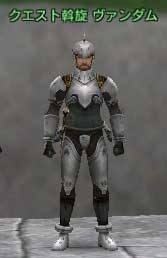
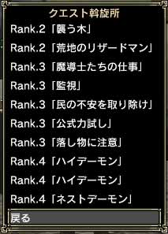
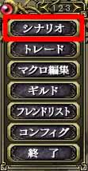
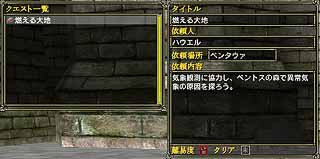
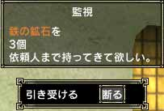

クエストを受けるには、町にいる「クエスト斡旋 ○○」というNPCの仲介を受けるのが便利です。仲介を受けずとも、町にいるNPCに話しかけることでクエストを引き受けることができますが、いちいち自分で探さなければならないので手間がかかります。
「クエスト斡旋 ○○」に何度も話しかけることにより、受けられるクエストが変化します。
 
(左：クエスト斡旋 右：クエスト一覧)
「クエスト斡旋 ○○」から依頼を引き受けると、依頼者の位置が表示されますので、そこにいる依頼人に話しかけクエストを引き受けます。ちなみに依頼人から引き受けずとも、既にダンジョン内でクエストは発生しているので、勝手にクエストをすることもできます。
ただしこの方法は、メニューの「シナリオ」にクエストの詳細が表示されないので初めてこなすクエストの場合はおすすめしません。
クエストの詳細を見るには、メニュー2ページ目の「シナリオ」の「クエスト」を選ぶことで見ることができます。
 
(左：メニュー 右：クエストの詳細)

(依頼人からのメッセージ) |